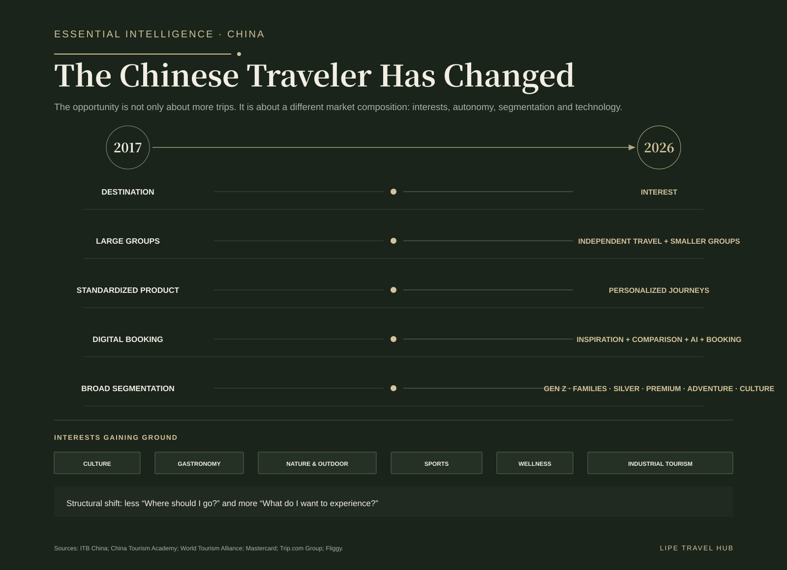
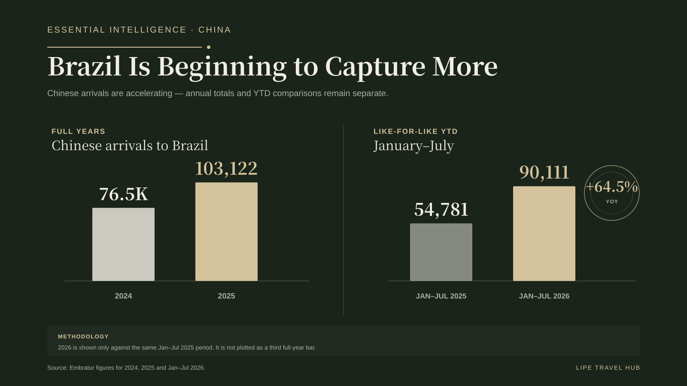
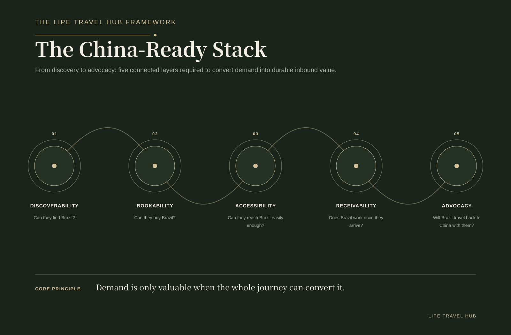
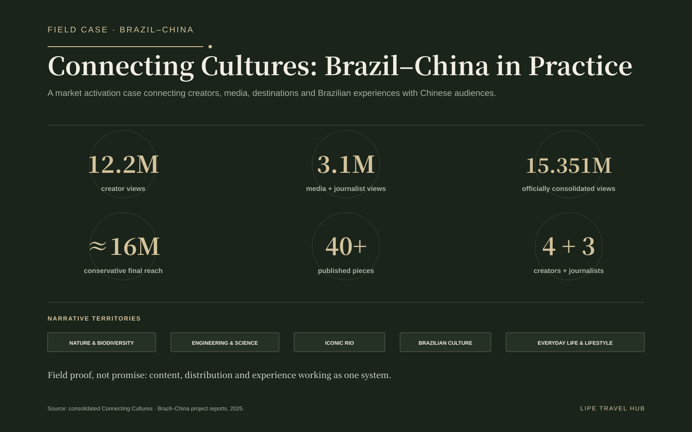

Scale is back. So is the competition.
China outbound travel is back at scale. In 2025, the market recorded 148.36 million outbound trips, up 20.8% year on year. In the first half of 2026, the figure reached 88.02 million, another 10.5% increase. The global travel question is no longer whether Chinese demand would return, but which destinations can capture it more effectively.
Brazil is gaining momentum as well. After receiving 76.5K Chinese visitors in 2024, it surpassed 103K in 2025. From January through July 2026, arrivals reached 90,111 versus 54,781 in the same period of 2025, a 64.5% increase. These are different statistical universes — Chinese outbound trips are not the same metric as international arrivals into Brazil — so they should never be presented as a direct market-share calculation. They show scale and competitive distance.
Entering the competitive set is only the beginning.
By 2024, Chinese travelers had reached more than 210 countries and regions. Nearly 20 destinations welcomed over one million Chinese visitors, while more than 60 exceeded 100,000. Brazil crossing the 100K threshold in 2025 matters, but it also shows the competitive tier the country is only beginning to enter.
Lower entry friction in 2026 helps, but access is not conversion. Making a destination easier to enter is different from making it easier to discover, compare, buy, experience and recommend. The real advantage is built in the ability to turn interest into distributable product.
The traveler changed more in composition than in scale.
Reading 2017 versus 2025 as a simple recovery story misses the deeper shift. Travel is moving from destination-led to interest-led; large groups now coexist with independent travelers and smaller flexible groups; standardized products are giving way to personalized journeys; and the digital path increasingly blends inspiration, comparison, AI and booking.
Segmentation is sharper too. Gen Z, families, silver travelers, premium, adventure and culture demand different propositions. And the interest set has widened: culture, gastronomy, nature and outdoor, sports, wellness and industrial tourism are emerging as real trip drivers.

Brazil has the assets. The task is to turn them into bookable product.
Owning an attraction is not the same as having an international product. To enter the purchase journey, an asset must be understandable, priced, available, distributed, connected to logistics and ready to receive the traveler.
Itaipu illustrates the opportunity. Brazil can sell more than nature and iconic sightseeing: engineering, science, energy and industrial tourism can speak directly to interest-led segments. The strategic gain comes from organizing these assets as findable, bookable experiences.


The new battleground is digital.
Social discovery, Xiaohongshu, WeChat, Weibo, Chinese OTAs and travel platforms, creators, structured content and AI-assisted planning are compressing the path from inspiration to booking. A product increasingly needs to be readable not only by travelers, but by the systems that will organize the trip for them.
For destinations and companies, localized content, structured data, clear inventory, relevant distribution and presence on the right platforms are no longer “China marketing.” They are part of the commercial infrastructure required to compete in the market.

The China-Ready Stack
Lipe Travel Hub organizes that capability into five connected layers: Discoverability, Bookability, Accessibility, Receivability and Advocacy. None works alone. Being found without being bookable creates friction; selling without preparing the guest journey damages reputation; delivering well without generating advocacy leaves value on the table after the trip.
Being China-ready is therefore not a translation exercise. It is the design of a coherent journey across desire, distribution, access, operations and recommendation.

Field Case: Connecting Cultures
Connecting Cultures, delivered in 2025, provides field evidence of how different Brazilian narratives activate different interests. Four creators and three journalists traveled through São Paulo, Foz do Iguaçu and Rio de Janeiro, producing stories around nature and biodiversity, engineering and science, iconic Rio, Brazilian culture and everyday life.
Consolidated results included 12.2M creator views, 3.1M media and journalist views, 15.351M officially consolidated views and approximately 16M in conservative final reach after later growth and reposts, plus 40+ published pieces. The important point is not reach in isolation. It is the evidence that there is no single Brazil story for China.



Connectivity remains the major structural friction.
Brazil cannot compete with short-haul Asian destinations on convenience. It has to compete on singularity, depth of experience and perceived value. That makes connectivity part of product strategy, not only an aviation issue.
Brazil–China institutional infrastructure — promotion, facilitation and cooperation initiatives — can reduce barriers. Commercial outcomes, however, still depend on whether destinations and companies can turn that foundation into product that can actually be bought.
The Brazil–China opportunity: seven moves that matter now.
- Stop translating. Start localizing.
- Make Brazilian tourism bookable.
- Design for interests, not only destinations.
- Build a China-ready guest journey.
- Treat connectivity as product strategy.
- Turn visitors into media.
- Measure conversion, not only visibility.
Brazil does not need to win 148 million trips. It needs to improve its ability to convert a small, growing and high-value share of that flow. The opportunity is already moving. The next phase should be measured less by declared potential and more by real capture.
Sources and methodology
Sources and methodology: ITB China; Ministry of Culture and Tourism of the People’s Republic of China; National Immigration Administration of China; China Tourism Academy; World Tourism Alliance; Mastercard; Trip.com Group / Ctrip; Fliggy; Embratur; Brazil’s Ministry of Tourism / Gov.br; Itamaraty; official aviation sources already validated in the editorial work; consolidated Connecting Cultures reports. Chinese outbound trips and international arrivals into Brazil are different statistical universes and are used here to frame scale, not to calculate direct market share.